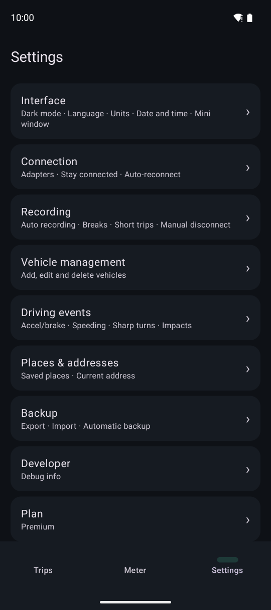
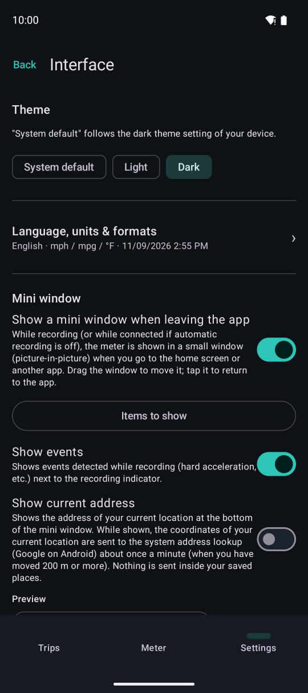
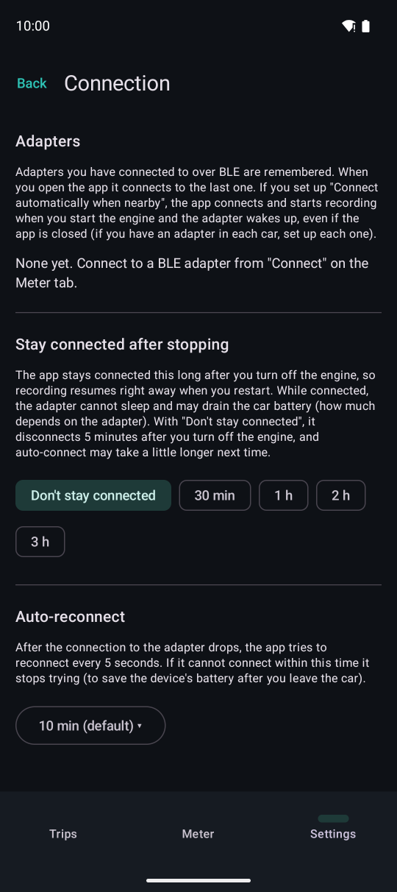
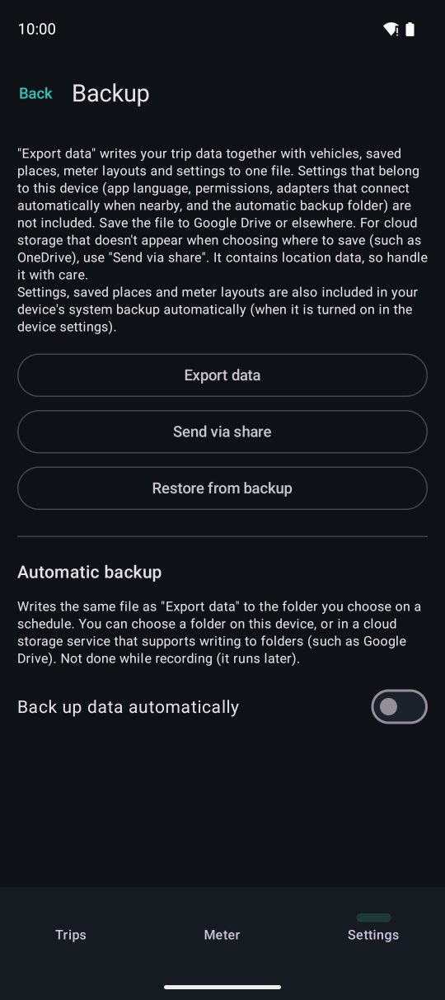

Other settings

The settings list.
Interface
Dark mode, language, units (distance, fuel economy, temperature, pressure, fuel), date and time formats, first day of the week, and the mini window.

Connection
- Adapters you have used. Rename or forget them
- Stay connected after stopping: keeps the connection for a while after the engine stops, so recording continues right away if you restart
- Auto-reconnect: keeps trying to reconnect for this long after the connection drops

Places & addresses
Manage saved places (such as home), and choose whether to show your current address on the meter and mini window. While shown, your current coordinates are sent to the device's address lookup about once a minute (off by default).
“Record the weather on trips” (off by default) saves the weather at the start, breaks and end of each trip. The location of those points, rounded to about 1 km, is sent to MET Norway (the Norwegian Meteorological Institute). Your route is never sent. The weather is looked up on the spot; without a connection the app keeps trying for up to an hour, and otherwise nothing is saved.
Backup
- “Export data” saves trips, vehicles, places, the fuel log, meter layouts and settings in one file
- “Restore from backup” restores from that file (it replaces your current data)
- Automatic backup (Premium): writes the file regularly to a folder you choose (cloud folders such as Google Drive work too)
- Android's automatic backup (to your Google account) also carries settings over to a new device
